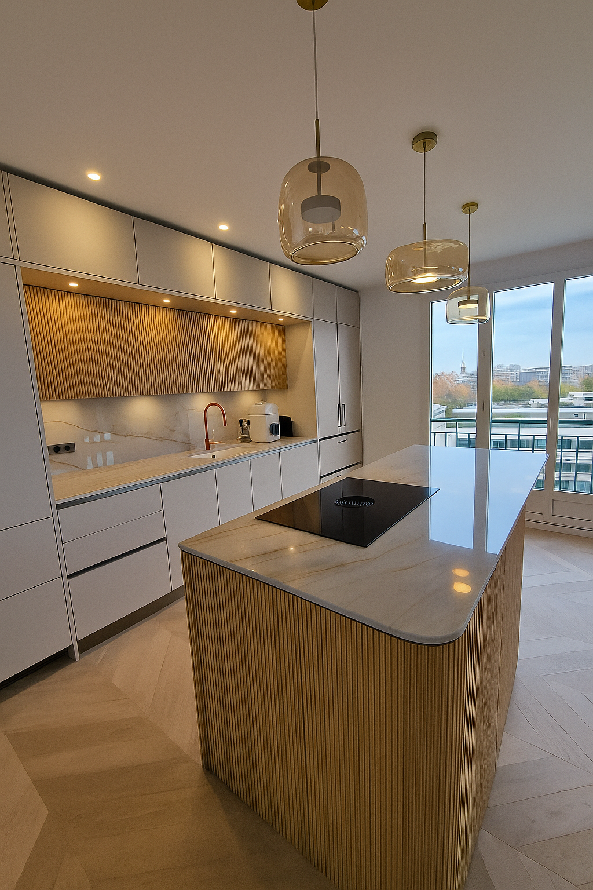
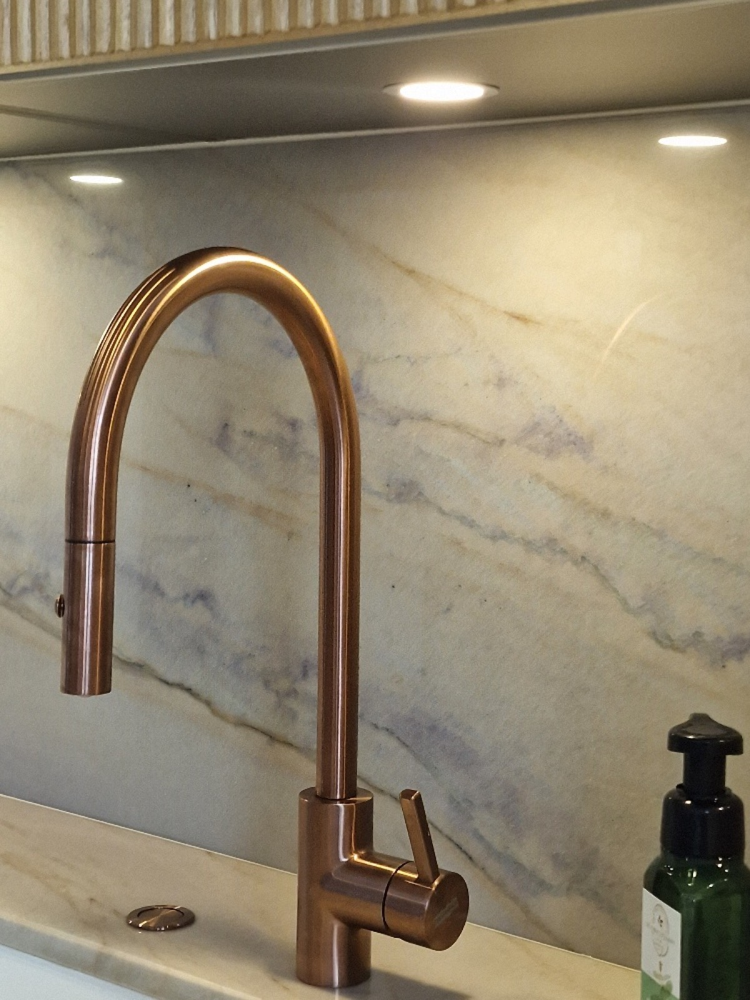
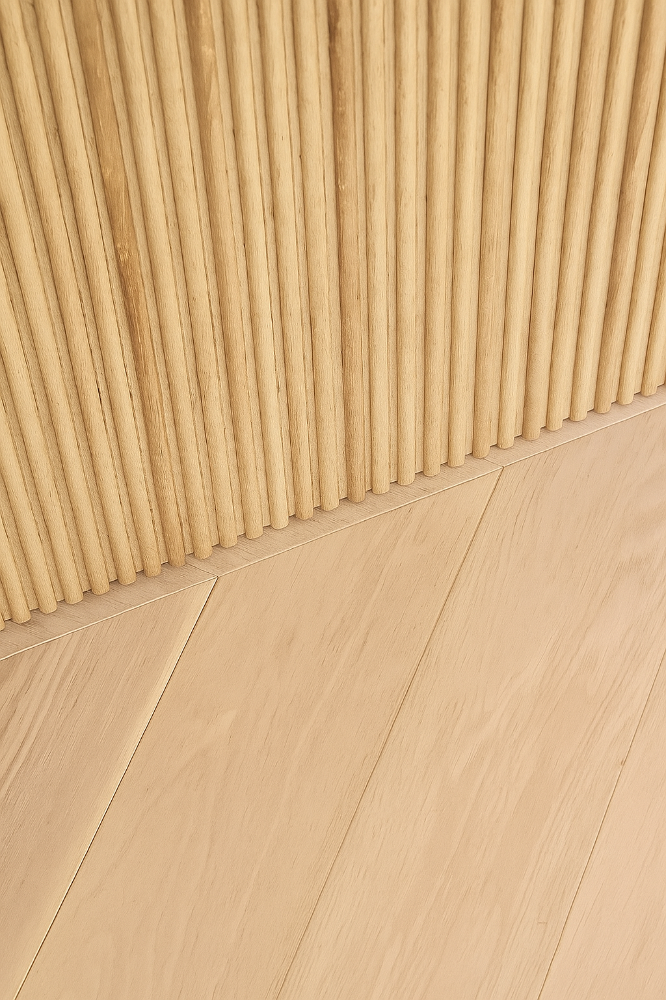
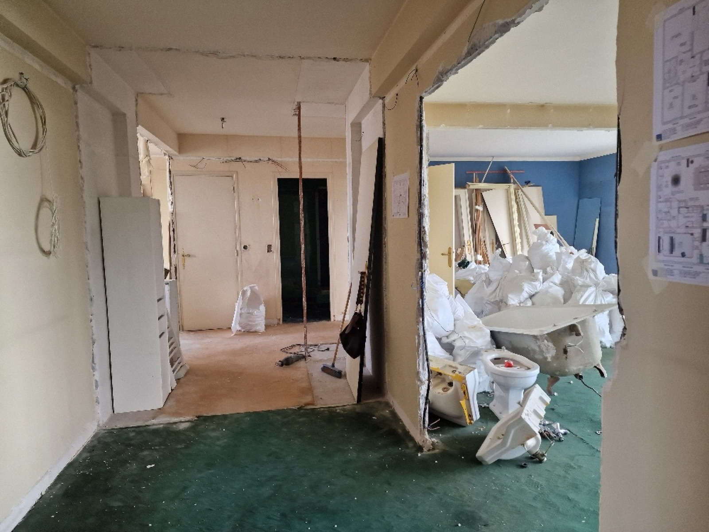
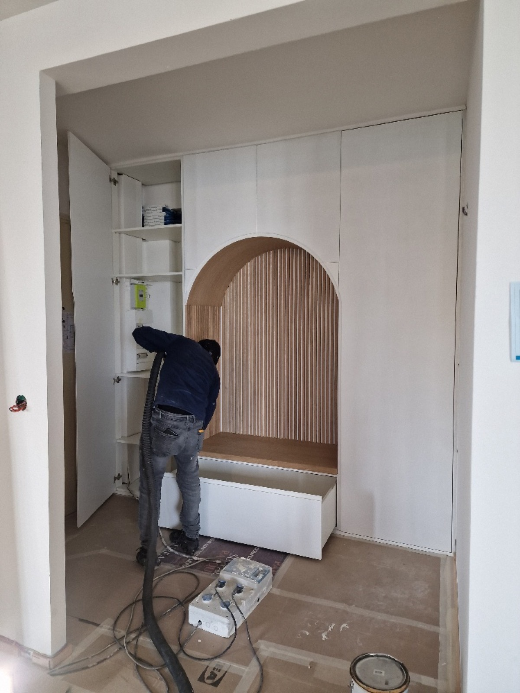
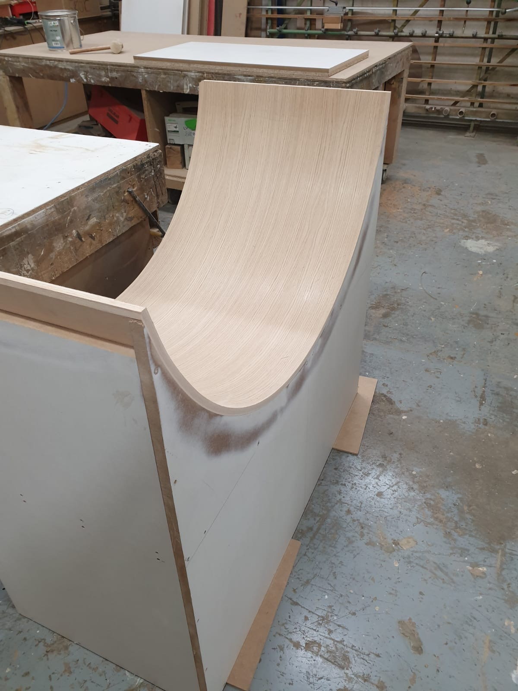
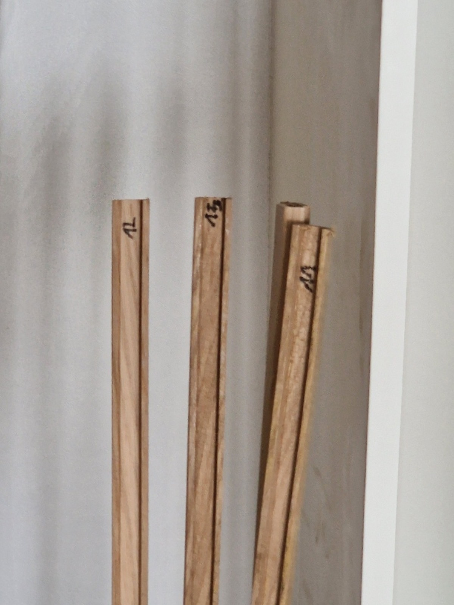
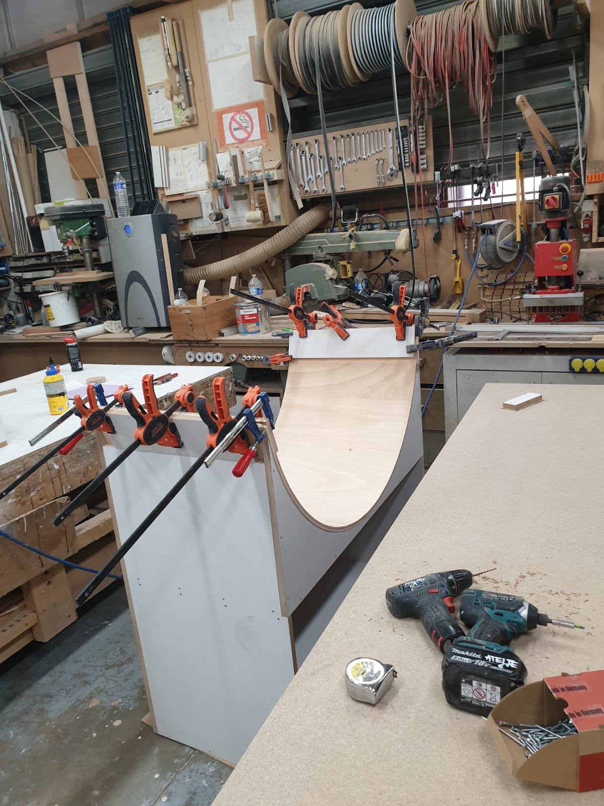

Cuisine & Îlot central




Rénovation complète d'un appartement familial dans le 16e arrondissement de Paris. Réagencement des volumes, création d'un îlot central cannelé, d'un bar à vin sur-mesure et d'une entrée sculptée en chêne — un dialogue entre lignes courbes et matières naturelles.





Chaque pièce sur-mesure est dessinée puis façonnée en atelier, avant d'être posée sur site.



Un projet ? Parlons-en.
Contactez-nous